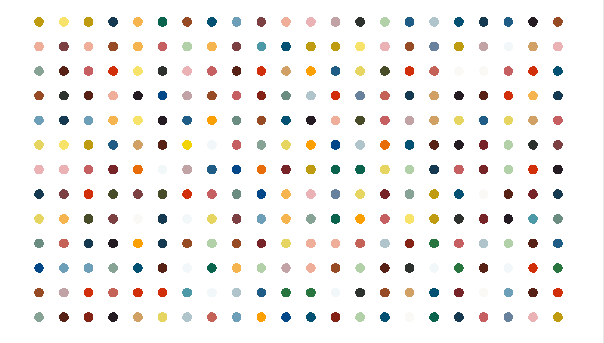
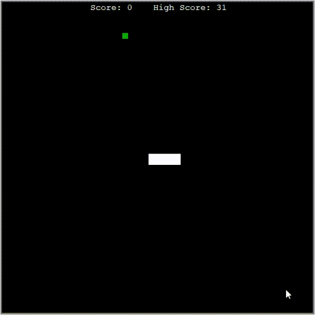
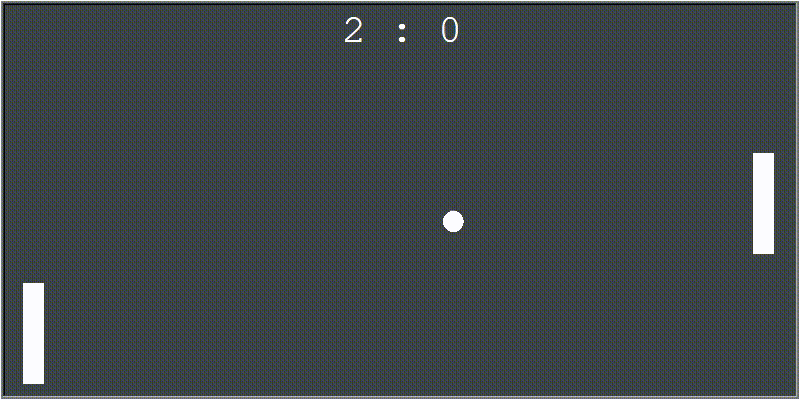

學寫程式2個月的小小成就感

其實從完成第一個小作業就想要分享了，但是當時想想這好像也沒什麼，於是繼續進行下去，時不時卡關遇到撞牆期，當時覺得應該要趁著卡觀的時候來寫點文章分享，或是整理學習筆記分享之類的，可是我懶XD，還有好多好玩的事情要做，好多遊戲要玩，好多課要上，所以就拖到今天。🤣
重要的事還是需要把時間排出來給它！
四月一整個月也休息夠了，補眠補得差不多了，前幾天陸陸續續安排了五月過後的行事曆，目前執行了兩天，緊湊且精實，還有些需要調整，過兩周後再另外寫一篇分享我的行事曆，今天就先記錄學寫程式的過程，分享學python到目前為止的成果就好。😁 自己也有點開心終於鼓起勇氣把blog的編輯器打開，因為我有安排寫作的時間XD，果然想做的事情要放進行事曆才是真的。常常腦袋裡太多想到想做的事情終究只是白日夢，或說是平行時空的可能性，但如果連把它排進行事曆都沒有辦法做到，就放過自己當作念頭的萍水相逢吧！這是我最近的心境轉變的小心得。
python小烏龜
大月四月中開始學到OOP，物件導向程式設計(Object-oriented programming)，才知道原來python裡面內建一個烏龜繪圖模組(Turtle Module)它的概念是有一隻背上綁了畫筆的烏龜，你可以叫它做一些事情這樣。(怎麼這麼可愛?🤣) 到這個階段才開始越來越覺得有趣，初學的時候跟著課程在Replit上面寫了一些文字版的遊戲，雖然自己覺得小有趣，但要分享的話會有點小彆扭XD，有多彆扭？我放幾個連結在下面留作紀念，畢竟這些學寫的時候玩了一下子，學了新東西向前跑以後就難得再打開他們了，哈！
- 猜字遊戲(Hangman Game)：小時候電子辭典裡面的經典遊戲之一(透漏年紀了XD)，我挑了一些我喜歡的樂團名字做了這個版本。
- 21點(Blackjack): 文字版的21點，在課程作業的基礎上我試著調整一些小細節，因為這個作業對當時的我學到的程度本來就有點難，加上太早加入這些小細節，自己弄得太複雜那時大概花了三五天才寫好XDD，也是第一次遇到大卡關的撞牆期。
Hirst-painting project
總之第一次看到這個小烏龜時覺得好好笑，跟著動手做才發現小烏龜可以做的事情好多！可以寫很多有趣的project，當時上課的內容是名畫仿作，用小烏龜繪圖模組來用程式來模仿畫出英國當代藝術家Damien Hirst的百萬名畫Antipyrylazo III，這個project當初也寫了兩天，雖然有小撞牆但做出來超有成就感~~~~

貪吃蛇 Snake Game
從這個project開始可以動起來，終於有「玩」遊戲的感覺，當時看到蛇蛇跑起來、會吃東西的時候真的有感動到，哈哈！

Pong Game
經典的老遊戲，歷史很悠久的那種，隨然課程作業是做雙人版的，但因為沒人跟我玩所以我試著寫自動控制可以跟電腦玩的版本，給自己三個難度的目標挑戰，最後發現中等難度的最難寫，超難的版本只要追求的位置跟著跑就好，很容易寫，但是玩起來都打不贏電腦其實反而沒那麼好玩。 
烏龜過馬路 Turtle Crossing Game
另一個經典小遊戲，過馬路的概念到現在還有許多新的遊戲版本的當代變形，做這個作業當時的挑戰是控制車車出現的方式，試了幾種方法才讓出現的數量和密度穩定，要挑戰高分有點難度，哈！

記憶測驗/教學式的遊戲: U.S. state game
這兩天做的作業，今天把新學的東西加進去，讓玩到一半或玩不下去時可以退出，把尚未答對的州存成csv檔案，後續可以複習再挑戰。也新增了全部答對的過關畫面恭喜畫面🤣 到這個階段之後應該可以挑戰換個地圖換個內容都可以運用目前會的技術製作各種類似的教學式小遊戲了！再次覺得感動的時候也想到應該要來寫篇文章慶祝一下，耶~
目前的進度大約到這邊，接下來遇到有趣的東西再陸續更新上來，繼續加油！